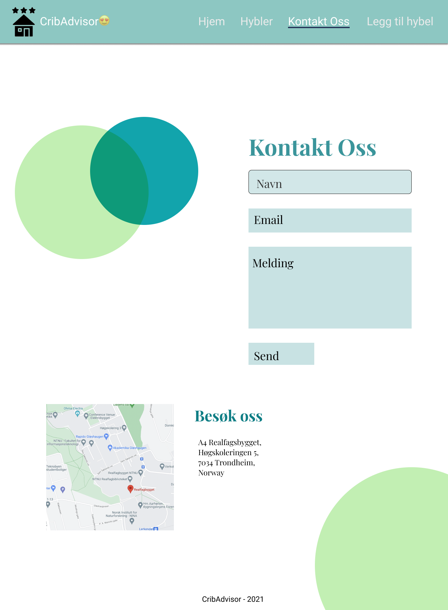

Webtek P2
Gruppe 50 - Isak, Ingrid, Magnus & Tale
Vår klient
Vår klient er et fiktivt selskap, “Cribadvisor”. Cribadvisor er en tjeneste som lar brukere, primært studenter, sammenligne ulike kollektiv for å skape sosiale sammentreff. Selskapet er i oppstartsfasen og trenger at vi står for alt fra design til den tekniske løsningen.
Hensikt
Cribadvisor er en tjeneste som lar brukere sammenligne ulike kollektiv for å skape sosiale sammentreff. Nettsiden skal være et sted hvor brukere lett kan navigere seg fram til den informasjonen de ønsker å finne. Målet er at brukeren skal få tilstrekkelig informasjon om ulike kollektiv for å kunne ta et valg om hvilket kollektiv personen ønsker å besøke. Avgjørende faktorer kan være f.eks. beligenhet, event-type eller plass.
Publikum
Sluttbruker er studenter i Trondheim som ønsker å sosialisere seg med andre medstudenter. De gjør dette med å finne kollektiv som de kan besøke. En annen type bruker er studenter som vil åpne kollektivet sitt for besøk gjennom tjenesten. Siden det er en stor målgruppe må det være enkelt å bruke nettsiden.
Struktur
Figur for illustrasjon av struktur til nettstedet
Første siden brukeren kommer til skal være vår “landing page” og er filen “index.html”. “index.html” skal kunne nås fra alle områder på nettstedet via nav-baren. Nav-baren skal inneholde alle sidene markert i blått over, i tillegg til “index.html” er disse nettstedets ulike hovedsider og skal kunne nås uansett hvor på nettstedet bruker er. Det at vi har en nav-bar lett tilgjengelig på alle nettstedene gjør at brukeren lett kan navigere uavhengig av hvor på nettstedet brukeren er. Det å ha en horisontal nav-bar er også noe som går igjen på mange nettsteder og vil gjøre det naturlig for bruker å lete etter navbar her. Når bruker står i “hybler.html” skal bruker se en oversikt over alle hyblene nettstedet har publisert. Hver av disse hyblene skal ha hver sin egne side som viser bruker informasjon om denne hybelen. Antall hybler og innhold er ikke definert enda, men alle disse vil ligge i samme kategori. I figuren over er disse vist som “hybelnavn.html”. I figuren over illustrerer pilene som går fra det stipplede rektangelet navigasjonsmulighetene hver enkelt av sidene under denne kategorien har.
Design og opplevelse
Vi har valgt dette designet, og fokuserer på at det skal ha et ryddig og pent utseende så man lett finner frem til dit man vil. Man kan nå alle sider på 2 trykk. Vi har også gitt siden mye “tomrom” på siden for å gjøre det lett for brukere å få med seg innholdet vi viser fram på siden. Sirklene som er inkludert på alle sidene er en leken, men fortsatt ryddig detalj vi har inkludert for å gjøre nettsiden mer interessant.
Fargevalg
Vi har bestemt oss for å ha et gjennomgående fargetema på hele nettsiden for å skape et mer profesjonelt og behagelige inntrykk. Her har vi en kombinasjon av mørke og lyse farger. Fargekodene vi har bestemt oss for å bruke gjennom nettsiden er:
- #C2EFB3 (aksentfarge 1)
- #5299D3 (aksentfarge 2)
- #095256 (aksentfarge 3)
- #FFFFFF (bakgrunn, hvit)
- #253257 (knapper)
Navbar
Siden skal ha en ryddig og oversiktlig navbar som ligger øverst på siden. Denne skal inneholde de ulike undersidene på nettsiden, og også inneholde en logo. Den siden brukeren er på skal ha en annen farge enn resten av elementene i nav-baren for å synliggjøre hvor man er på nettsiden.
Footer
Footeren skal ligge på bunnen av siden og vise navnet CribAdvisor, året 2021.
Font og skrift
Vi har valgt å bruke en såkalt “system font stack”, altså den fonten som sluttbruker har som standard på enheten de bruker. Det er en effektiv måte å gjøre nettsiden behagelig å bruke da det føles veldig likt ut som resten av systemet. Som fallback har vi ulike websafe fonter. Slik ser font valget ut i CSS kode:
font-family: -apple-system, BlinkMacSystemFont, ‘Segoe UI’, Roboto,
Oxygen, Ubuntu, Cantarell, ‘Open Sans’, ‘Helvetica Neue’, sans-serif;
Mindre skjermer
Vi gjør det enkelt for brukere å bruke nettsiden på mindre skjermer. Vi velger å bryte innholdet utover flere linjer i de tilfellene der skjermene er for små til å vise alt på samme linje.
Skisse av design og fargevalg til nettstedet
Innhold
Landing page (/index.html)
Førstesiden skal ha en tydelig overskrift for å vise brukeren at bruker har kommet til CribAdvisor. Øverst på siden skal det være en bildeserie med automatiske overganger. Dette skal bidra til å skape mer liv og bevegelse i førstesiden, samtidig som det lar CribAdvisor promotere mer av innholdet som ligger på nettstedet. Her skal det være en knapp som sender brukeren til oversikten over alle hyblene som er publisert.
Førstesiden skal innholdet flere slagord og mer tekst som handler om hva CribAdvisor er. Ordtakene skal være korte og synlige, og gi et et inntrykk av hva nettstedet er. Ordtakene skal samtidig bidra med å løfte brukerens inntrykk av nettstedet. Under overskriftene skal det korte avsnitt med forklarende tekst om CribAdvisor. Dette er for å informere bruker om tjenesten.
Skisse (/index.html)

Våre hybler (/hybler.html)
På “våre hybler” er oversikten over de ulike hyblene CribAdvisor har å tilby. Det er et bilde fra hver hybel, i tillegg til muligheten å “se hybel”, for å kun se den bestemte hybelen. På høyre siden av bilde vil titelen på hybelen bli vist, samt adresse, korte trekk om hva hybelen tilbyr, og antall vurderinger.
Hensikten med denne siden er å få en oversikt over alle de ulike hyblene så man videre kan lese mer om den eller de hyblene man interesserer seg mest for.
Skisse (/hybler.html)
Hybel (/hybler/hybelnavn1.html)
På fra hybler oversikten kan man klikke seg inn på hybel-siden. På denne siden vil det være et bilde fra eller av den spesifikke hybelen. Det vil være mulighet til å enten kontakte hybelen, eller gi vurdering. I tillegg vil det være en kort tekst der man kort kan introdusere hybelen sin. Videre vil det være en overskrift “om hybelen” som inkluderer noen ulike fakta om hybelen. Et ratingsystem med stjerner vil fremvises på høyre side som forteller om ratingen innenfor kategorier, for å få en detaljert beskrivelse av hybelen.
Målet med denne siden er å skape en informerende side for hver hybel. Ved å ha ulike kategorier kan bruker selv bestemme hvilke kategorier som er viktig ved valg av hybel. Siden er oversiktlig og ryddig.
Skisse (/hybler/hybelnavn1.html)
Fra hybelsiden skal brukeren kunne trykke på knappene som sier "Kontakt" og "Gi vurdering". Når bruker gjør dette skal en boks komme opp sentrert på skjermen med mulighet til å legge inn en vurdering på en hybel, og finne kontaktinformasjon til den aktuelle hybelen.
Skisse pop-up(/hybler/hybelnavn1.html)
Skisse pop-up(/hybler/hybelnavn1.html)
Kontakt oss (/kontakt-oss.html)
På “Kontakt Oss” siden er det mulighet til å skrive inn navn, email, melding, for så å sende inn. I tillegg er det et kart, samt adresse til kontoret vårt. Målet er at brukeren skal kunne kontakte oss gjennom en oversiktlig, pen og ryddig side.
Skisse (/kontakt-oss.html)

Legg til din hybel (/legg-til-din-hybel.html)
Målet med siden “Legg til ditt kollektiv” er at brukere av nettsiden kan legge til sitt eget kollektiv, og på den måten bli en del av CribAdvisor sitt fellesskap. Dette gjør de ved å fylle ut skjemaet som kommer opp når man er inne på siden. Her skal brukeren fylle ut navn, adresse, velge kategori for hvordan type kollektiv de er/hva de ønsker å tilby ift. arrangementer etc. Videre fyller man inn når man kan ha besøk, og legger inn bilder av kollektivet sitt.
Designet til “Legg til din hybel”-siden skal inngå i designprogrammet til de andre sidene, med samme fargekoder og layout. Siden vil formateres med et skjema der man fyller inn de ulike tingene man skal svare på for å legge til kollektivet sitt. Det skal også være en send-knapp så man kan sende inn skjemaet.
Skisse (/legg-til-din-hybel.html)
Applikasjoner
Vi skal bruke javascript på nettstedet for å øke brukerens opplevelse av interraktivitet på siden. Vi har planlagt å ha 5 ulike script med ulike funksjoner:
- Når bruker er på siden med informasjon over hybelen skal det være en knapp som skal ta brukeren til kontaktinformasjon til den hybelen. Dette skal være en pop-up som legges sentralt i vinduet, og man skal fortsatt kunne se noe av innholdet som ligger på den originale siden.
- Hybelsiden skal også ha en funksjon veldig lik den over, men som gir bruker mulighet til å legge igjen vurdering i form av karrakter innenfor ulike kategorier. Dette skal også være en pop-up. Bruke skal kunne gi karrakter fra 1-5 ved å trykke på stjerner som kommer opp på skjermen.
- Vi skal ha et script som validerer input fra bruker på kontakt-oss.html og legg-til-din-hybel.html for å forsikre om at bruker legger til input i rett format.
- På landing-page skal vi ha et slideshow som viser ulike bilder fra nettstedet, bruker skal kunne navigere mellom bildene manuelt.
- På hybler.html skal hver hybel vises med et bilde, men dette skal også være et slideshow med de ulike bildene fra denne hybelen.
Plan
Filstruktur
I og med at dette er et prosjekt med relativt stort omfang ønsker vi en tydelig plan over hva som skal gjøres før vi setter igang med utviklingen av siden. Først har vi en foreløpig plan over filstrukturen til siden. Vi ønkser at denne skal være ryddig og godt organisert. De største html-filene ligger øverst i strukturen, så har vi lagt de mer spesifikke i egen mappe. Vi ønsker å bruke flere stilark, hvor det som er felles for alle sidene, som f.eks navbar, font og fargevalg, ligger i eget stilark. Og så ønsker vi eget stilark for hver enkelt side utenom dette, for å holde det mer oversiktlig. Alle bildene vil ligge i en egen mappe for alle bildene, og her vil vi igjen dele bildemappen opp i flere undermapper ut ifra hvor de skal brukes. Alle script blir på lik linje som det over også liggende i en egen mappe for script.
Liste over mapper og filer:
- index.html
- kontakt-oss.html
- legg-til-hybel.html
- hybler.html
-
hybler/
- "hybelnavn1".html
- "hybelnavn2".html
- +++
-
styles/
- main.css
- index.css
- kontakt-oss.css
- legg-til-hybel.css
- hybler.css
- hybel.css
-
script/
- hybel.js
- hyblerjs
- kontakt.js
- slideshow.js
- validator.js
- vurdering.js
-
img/
-
hybler/
-
hybel1/
- img1
- img2
- img3
-
hybel2/
- img1
- img2
- img3
- +++
-
hybel1/
-
others/
- img1
- img2
- img3
- +++
-
hybler/
Arbeidsfordeling og frister
| Fil | Merknad | Ansvar | Frist |
|---|---|---|---|
| index.html | Script med slideshow + ordtak og innhold om CribAdvisor | Magnus | 31.10 |
| kontakt-oss.html | Kontaktinformasjon og mulighet for å bruker å sende inn melding via kontaktskjema. | Tale | 31.10 |
| hybler.html | Script som lister opp alle hyblene og info om disse (hybler.js). | Isak | 31.10 |
| legg-til-hybel.html | Input-skjema som lar bruker registrere sin hybel opp til nettstedet. | Ingrid | 31.10 |
| "hybelnavn1".html | Side som presenterer innhold om den valgte hybelen. Én side per hybel. | Felles | 31.10 |
| main.css | Felles stilark for alle områdene | Magnus | 31.10 |
| index.css | Stilark for index.html | Magnus | 31.10 |
| kontakt-oss.css | Stilark for kontakt-oss.html | Tale | 31.10 |
| legg-til-hybel.css | Stilark for legg-til-hybel.html | Ingrid | 31.10 |
| hybler.css | Stilark for hybler.html | Isak | 31.10 |
| hybel.css | Stilark for hybel.html | Isak | 31.10 |
| hybel.js | Script som lager hybel-side | Isak | 07.11 |
| hybler.js | Script som lister opp alle hyblene i en liste | Isak | 07.11 |
| kontakt.js | Script som lager en pop-up boks ved kontakt til en hybel | Ingrid | 07.11 |
| slideshow.js | Script for slideshow på index.html | Magnus | 07.11 |
| validator.js | Script for å validere input fra bruker i kontakt-oss.html/legg-til-hybler.html | Tale | 07.11 |
| vurdering.js | Script på “hybelnavn.html” som skal la bruker legge inn en vurdering og rating av en hybel. | Magnus | 07.11 |